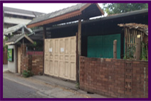
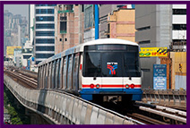
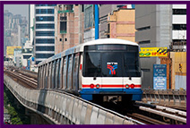

チェンマイ CHIANG MAI
チェンマイではリタイヤメントの方の滞在が多くいらっしゃいます。タイ第2の都市ですが、バンコクと比べると日本の地方都市（30万人規模）くらいでゴミゴミしてません。
また北のバラと言われる古都として知られるチェンマイは旧市街にはたくさんのお寺が点在して、タイでの京都とたとえられることもあります。この程よい田舎具合が定年後の方に人気の理由です。
日本人の人気エリアには近年大きなショッピングセンターもでき、その界隈はおしゃれなカフェがたくさんあります。
治安が良く、物価がバンコクより安く、生活費が抑えられるのも魅力です。家具・プール付き一軒家(家賃 50,000円)、2LDKコンドミニアム(家賃 30,000円)など、滞在費が安いのもリタイヤメントの方に人気の理由だと思います。ゴルフ場も多く、温泉などもあり、活動的に過ごせるのがチェンマイの魅力だと思います。
フォトギャラリー
チェンマイの一軒家の例
 チェンマイの大通り。おしゃれなショッピング施設やカフェが多く立ち並ぶ
チェンマイの大通り。おしゃれなショッピング施設やカフェが多く立ち並ぶ
メリット／デメリット
| メリット |
- 物価が安い、治安が良い。
- 天候にメリハリがあり空気がいい。
- 日本人が多数ロングスティしている。（日本人会があります）
- 日本人医師が常駐する病院が複数存在
- 生活エリアがコンパクト(移動費用が抑えられる)
- おしゃれなエリアがある(ニマンヘミン)
- ロイクラトン、ソンクラン(イーペン)などお祭りが有名
- 近隣に観光地が多数あり、行動的に生活できる。
|
| デメリット |
- バンコクと比べて日本の食材が手に入りにくい（日本食レストランは多数存在します）
- シーズンによっては暑い。(暑期3～5月、雨季6～9月、ベストは10月～2月)
|
バンコク BANGKOK
東南アジアでの最大の都市バンコクは発展が著しく、人口集中で大渋滞が名物となっています。そのため交通インフラも整えられては居ますが、朝夕のラッシュはまさに日本のようです。
物価については日本の3分の1程度ですが、贅沢品などについては日本並みです。
バンコクエリアの商業地区は若者向けのお店がたくさんあり活気に満ちており、東京などと変わりがありません。 バンコクでは日本のスーパーもあり、日本の食材は豊富です。有名チェーン店もたくさんあります。（大戸屋、すき屋、やよい軒、さぼてん、CoCo壱番屋、8番ラーメン、銀だこ、丸亀製麺などたくさんの日本食が進出してます）
日本と同じ生活をすることも可能ですが、そうなるとお金も日本並みになります。大都会での暮らしはどちらかといえば若者向きですね。
フォトギャラリー
 バンコク名物 交通渋滞
BTS(高架鉄道)や地下鉄、空港線など交通手段も豊富
バンコク名物 交通渋滞
BTS(高架鉄道)や地下鉄、空港線など交通手段も豊富
メリット／デメリット
| メリット |
- 物価はまだまだ安い。(日本の1/3)
- 高水準な医療サービスが受けられる。（一部では日本以上と言われている）
- 日本食に事欠かない。
- 交通網が整っている（高架鉄道BTS、地下鉄MRT、エアポートリンク）
- 交通費も安い（タクシー初乗り35バーツ = 約120円）
- 都会的暮らしができる。娯楽が豊富にある。
(ディスコ、カラオケ、ボウリング、アイススケート、シネコン(複合映画館)そしてマンガ喫茶やレンタルビデオ店等)
- ナイトライフも充実
|
| デメリット |
- 車が多く、空気が悪い。
- 渋滞が激しく、移動時間が読めない。
- 人と人との関わりが希薄になり、微笑みのタイらしくない
|
パタヤ PATTAYA
東洋のリビエラと称せられるビーチリゾートです。
バンコクからは2時間の一番近いビーチリゾートとして、地元でも人気です。海の見える街で暮らすというロングスティヤーも多く、欧米人が溢れている。その欧米諸国のロングスティ、年金生活者の環境が整っているので、意外と快適に生活ができる。
世界でも有数の歓楽街を有しており、ナイトライフが非常に充実しているために年中、外国人で溢れている。
1時間以内にゴルフ場が20あまりあり、ゴルフリゾートとしても有名です。欧米の男性高齢者が若いタイ女性と暮らしている風景がそこかしこに散見されるが、この官能的なパタヤで過ごす日本人はこれから増える傾向だと思う。
フォトギャラリー
 夜になると、非常に賑わうウォーキングストリート
夜になると、非常に賑わうウォーキングストリート
 かつての米軍の保養地。レジャー施設や美しい海岸の景色が多数存在する
かつての米軍の保養地。レジャー施設や美しい海岸の景色が多数存在する
メリット／デメリット
| メリット |
- エンターテイメント、ゴルフ、マリンスポーツなど余暇を過ごすには最適。
- 海の見える暮らしが簡単に可能。(下部表参照)
- オーシャンビューコンドミニアム
12,000B(40,000円)
- ビーチフロントリゾートホテル1泊
500B (~1,800円)
- バンコクより格安の物価
|
| デメリット |
- まだまだ日本人はマイノリティー
- 大陸の観光客が押し寄せている
- 少し夜の治安が悪い
|